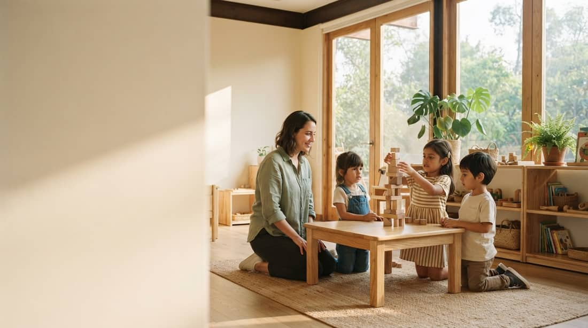
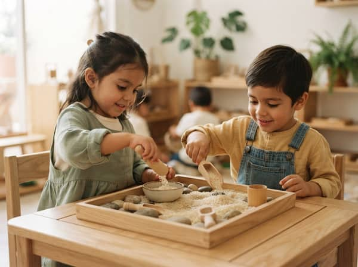
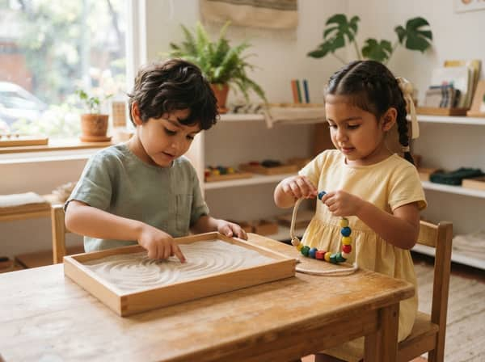
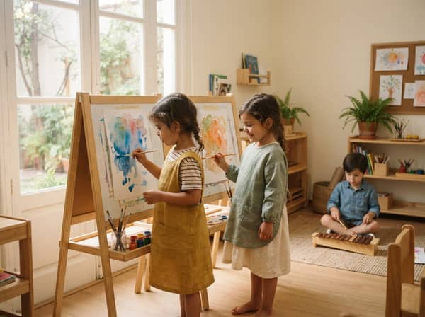
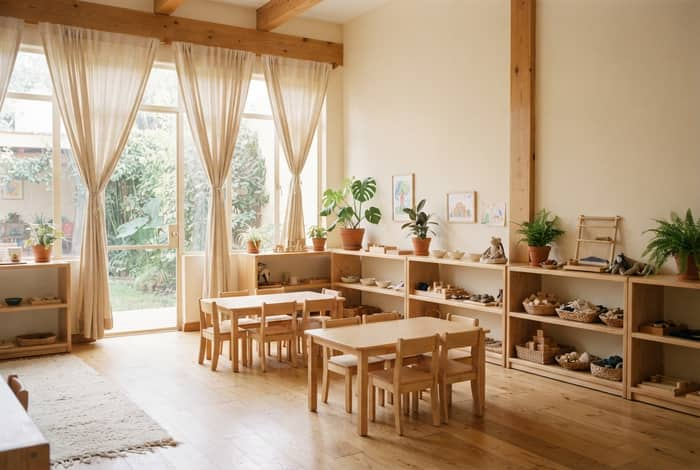
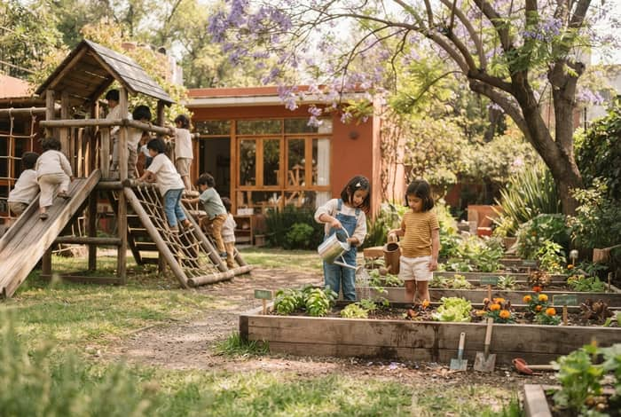

Folleto de programas · Ciclo 2027–2028
Educación inicial para niñas y niños de 3 a 6 años en Coyoacán, Ciudad de México. Grupos pequeños (8:1), aprendizaje a través del juego y un equipo con más de 15 años de experiencia.
Nuestros programas

Desarrollo sensorial, lenguaje oral y socialización temprana. Adaptación gradual de dos semanas y bitácora semanal con fotos.
Extensión opcional hasta las 15:00 con comida.

Iniciación a la lectoescritura y matemáticas lúdicas con material manipulativo, proyectos de indagación e inglés por inmersión. Comida incluida.

Arte, música, psicomotricidad y bilingüismo. Modalidad de 2, 3 o 5 días por semana, abierto a alumnos de otras escuelas.
Nuestro enfoque
Materiales abiertos que invitan a construir, probar y volver a intentar.
Proyectos que nacen de sus preguntas.
Nombrar lo que sienten y cuidar a los demás.
Tareas reales a su altura que construyen confianza.


Admisión y costos
Recorrido por aulas, jardín y comedor; conversación con dirección.
Tu hija o hijo pasa una mañana con su futuro grupo.
Conocemos a la familia y resolvemos dudas.
Entrega de documentos y pago de inscripción.
| Concepto | Pre-Kinder | Kindergarten | After-School |
|---|---|---|---|
| Inscripción anual | Por confirmar | Por confirmar | Por confirmar |
| Colegiatura mensual (×10) | Por confirmar | Por confirmar | Por día/semana |
| Descuento por hermanos | Sí, en colegiatura | ||
| Descuento por pago anual | Sí, por pago anticipado | ||
Documento de demostración: la tabla de costos vigente la define la escuela y se entrega en la visita.
casa-alba.example · WhatsApp +52 55 0000 0000 · admisiones@casa-alba.example
Av. Francisco Sosa, Coyoacán, CDMX · Lunes a viernes 7:30–17:30